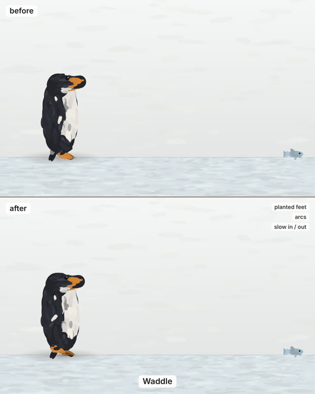
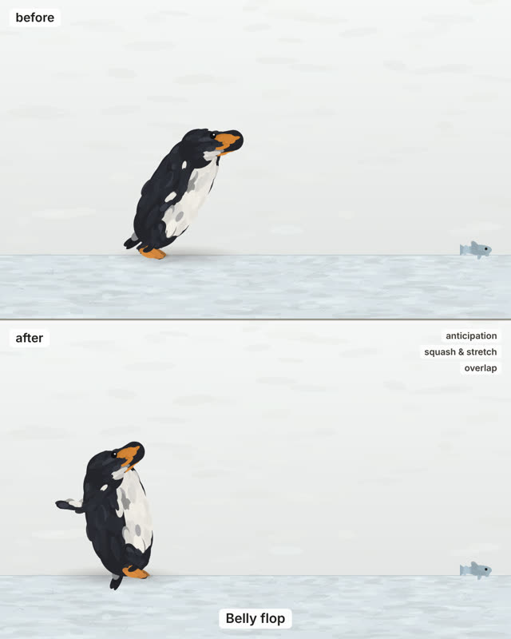
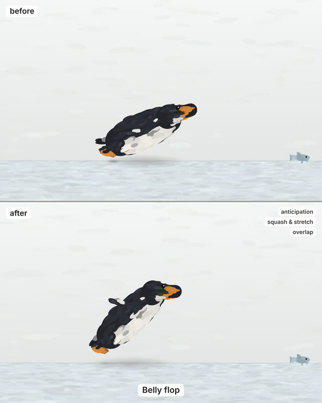
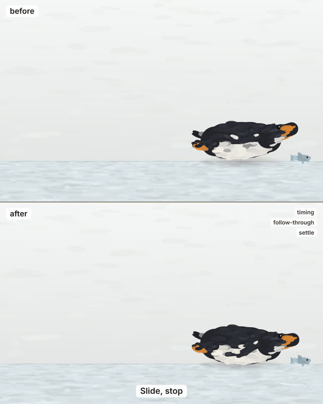
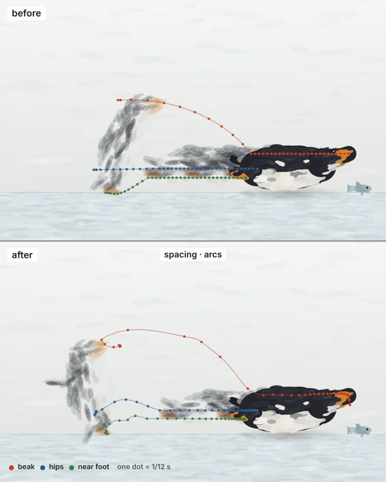

작업 흐름
- 입력
- 동물과 동작 한 줄(예: 회색 고양이가 낙엽을 보고 엉덩이를 흔들다 덤벼든다, 펭귄이 뒤뚱 걷다 배로 엎어져 생선까지 미끄러진다)
- 브리프
- 그 동작이 어떤 원칙을 보여 주는지, 동물(몸 구조 · 크기와 무게 · 비율 · 색 · 따라오는 부위 · 쉬는 동작), 비트마다 이야기 키, 비트마다 더할 패스(타이밍 · 예비 동작 · 호 · 팔로스루와 겹침 · 찌그러짐 · 2차 동작 · 과장), 발 딛는 표, 스터디할 점
- 만들기
- 캐스트 시트(키 포즈 좌우 · 숨 쉬는 대기 · 발을 모아 도는 회전)를 먼저 채점하고, 이야기 키만 잡아 위 칸을 만든 뒤, 패스 키 · 디딘 발 · 꼬리와 귀의 스프링 · 찌그러짐 · 숨을 더해 아래 칸을 만듦
- 확인
- 결정성, 두 칸에 동물이 그려지는지, 원칙 열 가지를 두 칸 모두 숫자로(아래 칸은 모두 통과, 위 칸은 넷 이상 실패, 비트에 붙인 원칙 태그는 모두 숫자로 뒷받침), 무릎 · 발목이 제 방향으로만 굽고 디딘 발이 닿는지, 비트 · 쉬는 구간 · 스터디 · 라벨
- 출력
- 1080×1350 MP4(30 fps, 소리 없음), 라이브 페이지, 스틸, 콘택트 시트, 캐스트 시트, 원칙 측정표(
out/<name>-audit.json)
node principle-pass/scripts/new-piece.mjs my-piece
node principle-pass/scripts/render.mjs my-piece/index.html --cast
node principle-pass/scripts/check.mjs my-piece/index.html
node principle-pass/scripts/render.mjs my-piece/index.html --sheet 12 --scale .5
node principle-pass/scripts/render.mjs my-piece/index.html
node principle-pass/scripts/audit.mjs --page 다른-스킬/examples/x/index.html요구 사항: Node 18+와 Playwright Chromium, ffmpeg. 네트워크 · npm 설치가 필요 없습니다(10초 영상 렌더가 약 1분). 단계별 순서는 SKILL.md에 있습니다.
샘플
원본 영상에 없는 동물과 동작 두 개를 브리프부터 새로 만든 영상의 장면입니다. 위 칸이 처음 그대로, 아래 칸이 원칙 패스 후입니다. 카드를 누르면 새 탭에서 그 순간부터 라이브 페이지가 열립니다.
배 미끄럼 예제 · 10.4초
얼음 위의 펭귄이 네 걸음 뒤뚱 걷고, 몸을 뒤로 젖히며 날개를 들었다가 배로 엎어져 생선 앞까지 미끄러집니다. 시작 템플릿과 다른 몸(곧게 선 두 발, 날개, 납작한 발, 짧은 꼬리)을 자기 브리프로 키잉했습니다. 위 칸의 펭귄은 발이 얼음 위를 스케이트처럼 미끄러지고, 그대로 쓰러지고, 멈출 때 뚝 섭니다.





덤벼들기 시작 템플릿 · 9초
new-piece.mjs가 복사하는 시작 템플릿입니다. 회색 고양이가 바닥의 마른 잎을 보고, 머리와 귀가 먼저 돌아가고, 웅크리고, 엉덩이를 세 번 흔들어 힘을 모은 뒤 덤벼들어 앞발로 누릅니다. 위 칸의 고양이는 웅크린 자세에서 그대로 떠올라 둥실 날아갑니다.
캐스트 시트 키 포즈 좌우 · 대기 · 회전
장면보다 먼저 채점하는 시트입니다. 이야기 키와 패스 키를 오른쪽과 왼쪽으로, 숨 쉬는 대기 동작, 발을 모았다가 한 프레임에 뒤집고 다시 딛는 회전을 그립니다. 관절이 거꾸로 굽으면 칸에 ✗가 붙습니다.
실제 작품
이 레포에서 만든 스킬입니다. Endel(@endel)이 X에 올린 2.8초짜리 영상이 출발점입니다. 붓 자국으로 그린 3D 여우가 눈밭에 머리를 박았다가 빼내고 털어 내는 한 동작을, 위에는 before, 아래에는 디즈니 애니메이션 원칙을 따르라고 한 뒤의 after로 겹쳐 보여 주고, 아래 칸에 동작 이름(“Pull out, shake off”)을 붙였습니다. 이 스킬은 그 형식(같은 동작을 위아래로, 라벨과 함께)과 생각(원칙은 이야기 포즈를 바꾸지 않고 그 위에 더하는 패스)을 가져와, 그 패스를 코드로 드러내고 숫자로 잴 수 있게 했습니다. 원본의 여우 · 눈밭 · 동작 · 붓 자국 렌더러 · 프레임은 쓰지 않았고, 시작 템플릿과 예제는 모두 이 레포의 것입니다. 생성 영상은 쓰지 않았습니다(코드 전용).
링크
- SKILL.md 워크플로
- 폴더 lib · scripts · references · templates · examples
- README.md 빠른 시작
- references/ANIMATION-PRINCIPLES.md 레포 공용: 12원칙 패스의 순서와 숫자, 측정기
- lib/principles.js 복사해 쓰는 도구: 이징 · 키 · 호 · 스프링 · 찌그러짐 · 숨 · 측정기
- references/BRIEF.md 브리프 틀과 채점 기준
- references/RIG.md 동물 리그, 포즈 채널, 이야기 키와 패스 키, 디딘 발, 스프링
- references/LOOK.md 두 칸 화면 · 과슈 붓질 · 라벨 · 스터디
- references/SOURCE.md 원본 게시물, 가져온 것과 가져오지 않은 것
- references/LESSONS.md 겪은 문제와 해결